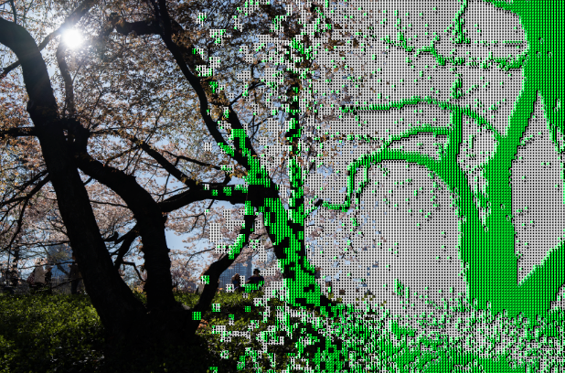

York University
University of Cambridge

Adobe
Adobe

Human vision and machine vision share deep roots in visual perception, yet the two research communities rarely converge. This half-day workshop brings researchers from both fields together to explore how insights from biological vision can improve computational systems — and vice versa — across rendering, displays, scene understanding, and perceptual modeling.
Organizers: Kenneth Chen (NYU) · Niall L. Williams (U. Zaragoza) · Colin Groth (NYU) · Jenna Kang (NYU) · Alexandre Chapiro (Meta Reality Labs) · Qi Sun (NYU)